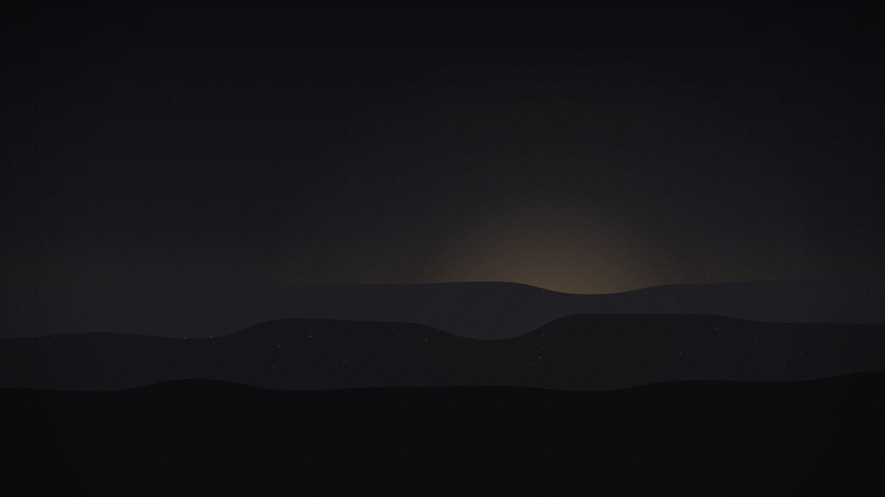
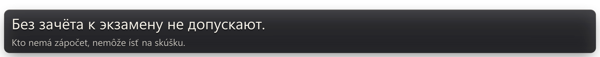
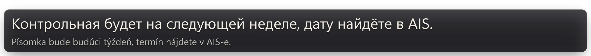
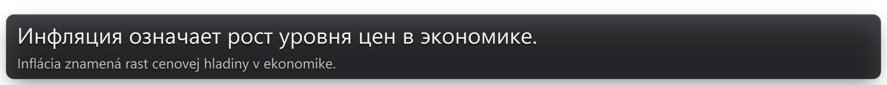
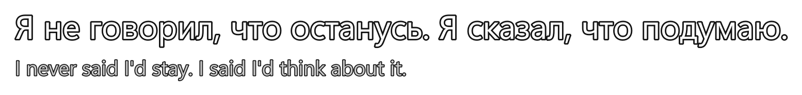
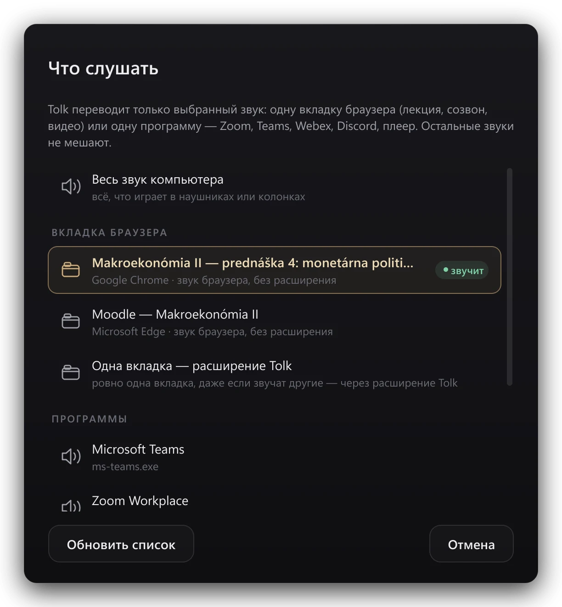
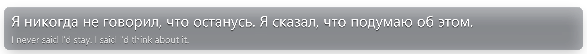
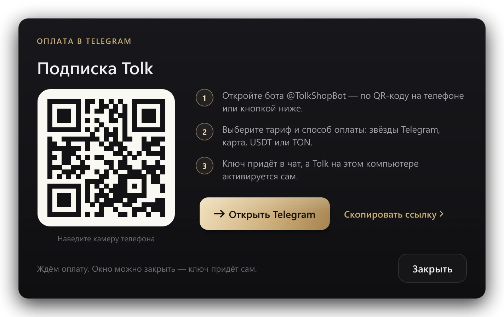

Tolk 3.0 · перевод в реальном времени
Лекция идёт по‑словацки.
Субтитры — по‑русски.
Tolk слышит звук компьютера и через долю секунды показывает перевод поверх любого окна — лекции в Teams, записи на YouTube, фильма или созвона.
30 минут Tolk AI бесплатно · без регистрации · Windows 10 и 11

Tolk/SK → RU



Субтитры — настоящий кадр Tolk 3.0 с переводом Tolk AI.
Коротко
Tolk слышит всё, что звучит на компьютере, и через долю секунды показывает перевод поверх любого окна. Ничего не нужно настраивать: нажмите «Начать перевод» — и читайте.
Работает везде, где есть звук
01 — Где пригодится
Один Tolk — для учёбы, кино и работы.



02 — Как это работает
Три шага — и лекция на вашем языке.
Шаг 1
Скачайте Tolk
Установка — минута. Первые 30 минут Tolk AI бесплатно: без карты и регистрации.
Шаг 2
Выберите, что слушать
Вкладку с лекцией, Zoom, Teams или весь звук компьютера. На Windows 11 — без всяких расширений.
Шаг 3
Читайте перевод
Субтитры появляются поверх любого окна. Перетащите их мышью, выберите стиль и размер — остальное Tolk настроит сам.
03 — Tolk AI
Обычный переводчик переводит слова. Tolk AI — смысл.
В словацких лекциях полно университетских слов и сленга. Вот как их понимает Google Переводчик — и как Tolk AI.
Настоящие ответы обоих переводчиков, 25 сентября 2026. В живой лекции у Tolk AI ещё и контекст: он помнит предыдущие фразы.
04 — Внешний вид
Шесть стилей. Выберите свой.
Графит для лекций, Кино для фильмов, Жёлтые — когда фон пёстрый. Размер, ширина и место на экране — как вам удобно.
35языков речи — от словацкого и чешского до японского
32языка перевода, включая русский, украинский и английский
30 чTolk AI в месяц в любом тарифе — около 20 пар
0секунд вашего звука уходит в интернет: речь распознаётся на компьютере
05 — Цены
Одна подписка. Всё включено.
Любой тариф — это весь Tolk и 30 часов Tolk AI на каждые 30 дней. Чем дольше срок, тем дешевле месяц.
Не хватило часов?
Цены в гривнах и крипте — по курсу monobank и CoinGecko, округлены. Точная сумма — в боте.
Оплата — в Telegram
Кнопка «Купить» открывает нашего бота @TolkShopBot. Там же — продление, часы Tolk AI, ваши ключи и напоминание, когда подписка подходит к концу. Никаких автосписаний.
- 01Выберите тариф и способ оплаты.
- 02Звёздами Telegram — ключ приходит сразу. Картой или криптой — пришлите скриншот оплаты, проверка обычно до 15 минут.
- 03Ключ придёт в чат. Если открыли бота из Tolk — программа активируется сама.

30мин
Попробуйте на своей лекции.
Скачайте Tolk и нажмите «Попробовать бесплатно»: полчаса полной версии с Tolk AI. Без карты и регистрации — один раз на компьютер.
Скачать для Windows
Windows 10 и 11 · обновляется сам
06 — Вопросы